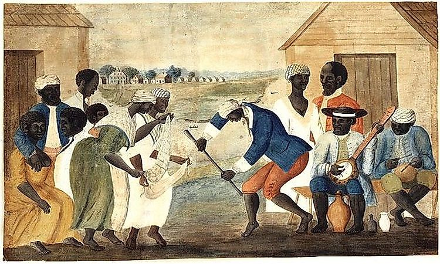
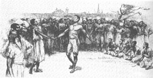

아프리카와 유럽의 혼합 음악
18세기에 이르러 뉴올리언스 지역의 노예들은 거래로 인하여 시장에 모여들었는데, 이 시장은 후에 아프리카 춤으로 유명한 콩고 광장으로 알려지게 되었다.
1866년까지, 대서양 노예 무역은 거의 40만 명의 아프리카인들을 북아메리카로 데려왔다. 노예들은 주로 서아프리카와 더 큰 콩고 강 유역에서 왔고 강한 음악적 전통을 가지고 왔다. 아프리카의 전통은 주로 단선 멜로디와 콜 앤드 리액션 패턴을 사용하며, 리듬은 독특한 구조를 가지고 있으며 아프리카 언어 패턴을 반영한다.
1885년 한 기사에 따르면 그들은 똑같이 여러 종류의 '도구'에서 이상한 음악을 만들고 있었다고 한다. 즉, 세탁기, 욕조, 막대기나 뼈로 두들겨 맞은 상자, 그리고 밀가루 막대기에 피부를 올려서 만든 드럼 등을 만들어 냈다.


1866년까지, 대서양 노예 무역은 거의 40만 명의 아프리카인들을 북아메리카로 데려왔다. 노예들은 주로 서아프리카와 더 큰 콩고 강 유역에서 왔고 강한 음악적 전통을 가지고 왔다. 아프리카의 전통은 주로 단선 멜로디와 콜 앤드 리액션 패턴을 사용하며, 리듬은 독특한 구조를 가지고 있으며 아프리카 언어 패턴을 반영한다.
1885년 한 기사에 따르면 그들은 똑같이 여러 종류의 '도구'에서 이상한 음악을 만들고 있었다고 한다. 즉, 세탁기, 욕조, 막대기나 뼈로 두들겨 맞은 상자, 그리고 밀가루 막대기에 피부를 올려서 만든 드럼 등을 만들어 냈다.
뉴올리언스
뉴올리언스의 음악은 초기 재즈의 창조에 심오한 영향을 미쳤다. 뉴올리언스에서 노예들은 부두와 드럼 연주와 같은 그들 문화의 요소들을 연주할 수 있었다.
많은 초기 재즈 뮤지션들이 스토리빌(Storyville)이라고 불리는 길거리 주변의 붉은 빛 구역의 술집과 사창가에서 연주를 했다. 댄스 밴드 외에도 화려한
장례식에서 연주하는 행진 밴드가 있었다.
행진 밴드와 댄스 밴드가 사용하는 악기는 재즈의 악기가 되었다. 유럽 12음계의 음계로 조율된 작은 악단에는 독학한 음악가들과 정식으로 교육을 받은 음악가들이 섞여 있었는데, 장례 행렬에서 온 음악가들이 많았다. 이 악단들은 남쪽 깊은 곳의 흑인 공동체를 여행했다. 1914년부터, 크리올과 아프리카계 미국인 음악가들은 미국 북부와 서부의 도시들에서 재즈 연주를 했다.
행진 밴드와 댄스 밴드가 사용하는 악기는 재즈의 악기가 되었다. 유럽 12음계의 음계로 조율된 작은 악단에는 독학한 음악가들과 정식으로 교육을 받은 음악가들이 섞여 있었는데, 장례 행렬에서 온 음악가들이 많았다. 이 악단들은 남쪽 깊은 곳의 흑인 공동체를 여행했다. 1914년부터, 크리올과 아프리카계 미국인 음악가들은 미국 북부와 서부의 도시들에서 재즈 연주를 했다.
20세기 초의 스윙
스윙은 재즈에 사용되는 아프리카 기반의 리듬 기법 중 가장 중요하고 오래 지속되는 것이다. 루이 암스트롱의 스윙에 대한 정의를 인용하면 다음과 같다:
"느낌이 느껴지지 않으면, 당신은 그것을 결코 알 수 없을 것이다." 새 하버드 음악사전은 스윙은 다음과 같이 말한다: "재즈의 무형의 리듬 모멘텀...
스윙은 분석을 거부한다. 스윙의 존재에 대한 주장은 논쟁을 불러일으킬 수 있다." 이러한 스윙의 양상은 아프로 캐리비안 음악보다 아프리카계 미국인
음악에서 훨씬 더 널리 퍼져 있다. 좀 더 리듬감 있게 복잡한 흑인 음악에서 들리는 것은 스윙의 한 측면이다.